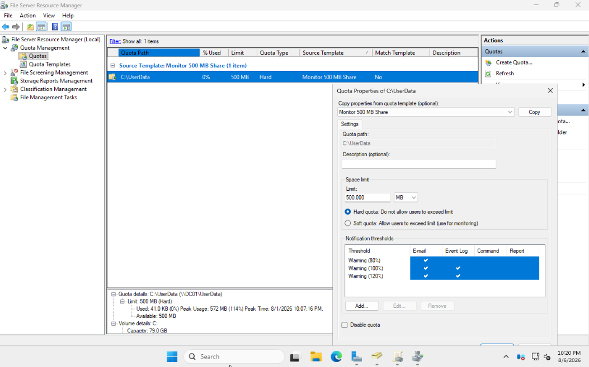

Overview
The project created a centralized storage environment that controls disk usage, supports file recovery, and limits departmental folder visibility according to user permissions.
Features Implemented
- Installed and configured File Server Resource Manager.
- Created automatic quota management for redirected user folders.
- Applied quota templates to individual user storage.
- Enabled Volume Shadow Copy Service and Previous Versions.
- Created snapshots and restored previous file versions.
- Enabled Access-Based Enumeration for shared resources.
- Used NTFS permissions to control departmental access and visibility.
Security Design
The lab uses a centralized departmental share with protected subfolders. NTFS permissions determine access, while Access-Based Enumeration prevents users from seeing folders they cannot open.
Challenge and Resolution
Folder Redirection initially failed because the root UserData folder lacked permissions needed for automatic folder creation. I used Group Policy results and Event Viewer to isolate the issue, added the required Authenticated Users permissions, and verified successful redirection.
Results
- Centralized user data storage and management.
- Controlled disk consumption through automatic quotas.
- Enabled self-service file recovery through Previous Versions.
- Improved share security and usability with NTFS permissions and ABE.
Lessons Learned
This project strengthened my understanding of enterprise storage administration and showed how Group Policy, SMB shares, NTFS permissions, quotas, and recovery features must work together.
Screenshot
